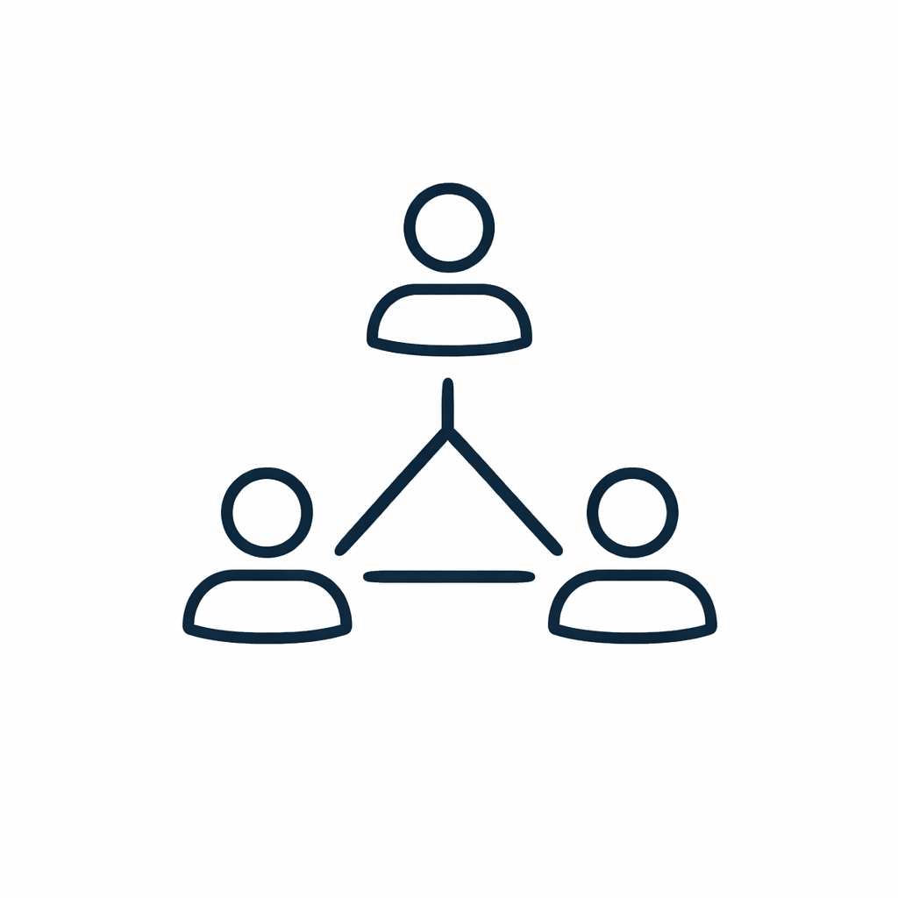

The firm
Bulat Advisory was founded by Maxim Bulat — an FP&A professional with hands-on experience inside large, complex organizations. Fractional FP&A means you get that experience embedded in your business, without the full-time cost.
The foundation of Bulat Advisory is hands-on corporate FP&A experience — not advisory work, not investment banking, not theoretical finance. The kind of experience that comes from actually running a budget cycle under pressure, building a board model at midnight before a quarterly review, and learning what makes a financial narrative land with skeptical investors.
The fractional model exists because the finance function at a growth-stage company doesn't fit neatly into a single job description. You need someone who can model, analyze, present, and advise — but you need them for a fraction of a full-time week, not every hour of every day. A full-time VP of Finance is a significant investment in total compensation, benefits, and equity. A Bulat Advisory engagement delivers the same strategic thinking at a fraction of the cost — and scales with what you actually need.
The companies that benefit most are those in a specific in-between moment: past the stage where the founder can manage everything in a personal spreadsheet, but not yet at the scale where a full finance function makes sense. That window can last two to four years. We're built exactly for it.
We'll tell you when your assumptions are too optimistic.

We work with your team, not around them.
A model nobody uses is a failure. We care about decisions, not deliverables.
The intro call is 30 minutes, free, and genuinely low-pressure. We'll ask good questions, listen carefully, and give you an honest answer.
Schedule a Call